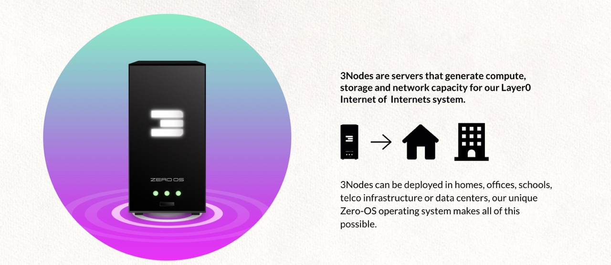
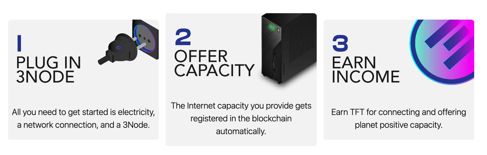
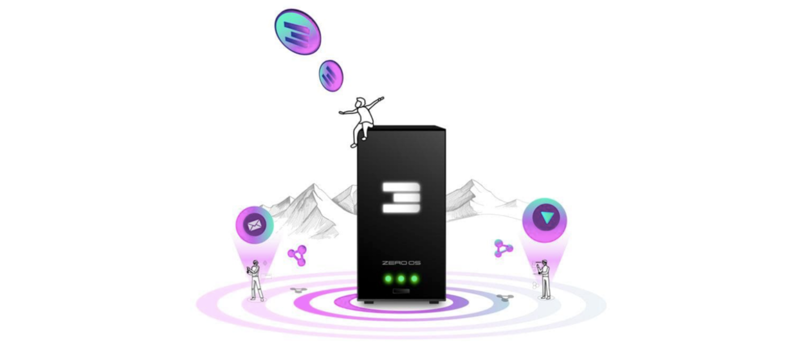
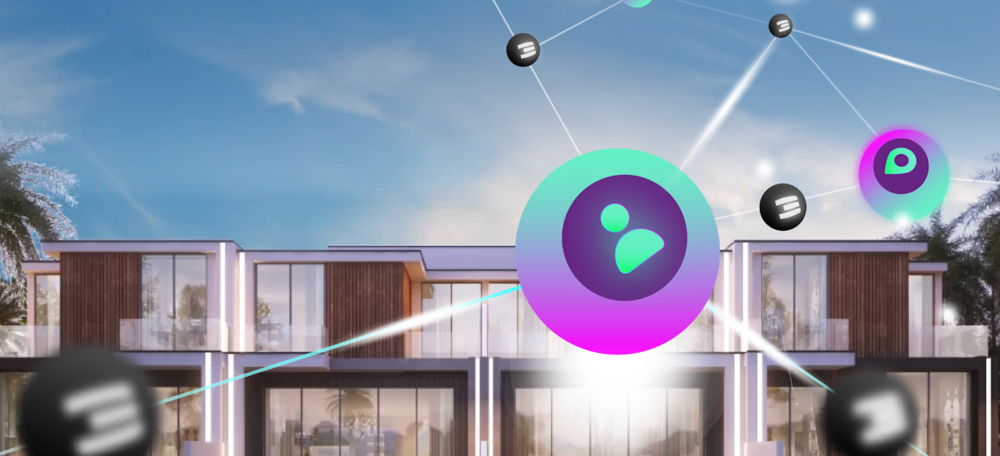

"When you were born in a world where you don’t fit in, you were born to help create a new one."
Together we build our own future through the Internet of Internets:
- An Internet of Internets is owned by the people.
- It interconnects us all, directly, without anyone in the middle.
- We store our data in full sovereignty and privacy.
- On top of it, we build valuable experiences, useful experiences.
- Not to control. Not to addict. Not to manipulate.
- Rather to connect. To exchange. To share. To provide value for each other.
- A circular economy, to benefit the collective and, as a result, each of us individually.
- As believers in a better world who choose to act.
"The fight for a better Internet is inseparable from the fight for a better world."
We can continue down the path we’re on.
But ask yourself, is it a good one? Is it the right one? Is it just?
Is the world we live in today the one we wish for our children and all those to come?
If yes, please continue.
If not, we have an answer.
Come on, come all. Creators. Builders. Dreamers. No need to dream anymore.
This is the Internet of Internets.
It’s for you. For me. For all of us.
By you. By me. By all of us.
So, are you with us? Then come along.
Together we build our own future through the Internet of Internets.
Long Story Short

The truth is that ThreeFold is a big project. Here we will try to make things a little simpler for you.
So, ThreeFold is building a new Internet. Why?
What it boils down to is that currently the Internet is only available to about 1/2 of the world (meaning billions are being left behind), it is centralized (a handful of large corporations profit off of our data), and it uses up to 10% of the world's energy consumption. So, we're building a new Internet that empowers equality (access), digital sovereignty (data ownership, for example), and sustainability (reduces energy consumption).
How does it work?
Everything on the Internet – websites, apps, photos, videos, etc – uses up capacity and is stored in huge data centers owned by big companies, mainly in North America, Europe, and some in Asia. In our solution, centralized data centers are replaced with a grid of "nodes" distributed around the world.
These nodes are owned by ThreeFold Farmers – but only the physical hardware – the data inside of the nodes belongs to the people or organizations who put it there. So, "farmers" plug in hardware and start to create capacity that can be used by people.
Farmers come in all shapes and sizes. Some farmers run small data centers while others simply run a node out of their living room.
When farmers connect active hardware (add capacity) to the ThreeFold_Grid, ThreeFold_Tokens are created. Farmers can then sell those tokens to people who want to use capacity (e.g. a developer that wants to build or host a website, or a person who wants to store some photos). More on tokens down below.
Seems quite lofty. How will you build it?
It's true that rebuilding the Internet is not so simple. But a lot of infrastructure has already been built and the technology is quite advanced. Over the last 2+ years, independent ThreeFold Farmers have already plugged in more than 80,000,000 GigaBytes worth of storage and 14,000 CPU Cores across 20+ countries. That might not mean a lot to non-technical folks but it is quite a significant amount.
20+ countries? What happened to equality?
As far along as we are, we still have work to do. One of our biggest goals in the near future is to expand the grid to Africa, South America, and parts of Asia where currently the Internet is too expensive or not available. Farming is incentivized around these key geographies.
So how can I access / use your Internet today? What can I do on it?
For the everyday person looking to benefit from a new, neutral Internet, some of the first experiences are coming alive Q1 2021. This includes communication tools, file storage, a wallet, & more – all with the advantages of being more sustainable for our planet and with full control of your own data. And over time, more and more experiences will come to this Internet. We'll be updating here and on our communication platforms as they come. But don't worry, as a user it doesn't change much – no coding required. :)
That said, if you're an IT professional or a developer, you can take advantage of the ThreeFold Peer-to-Peer Cloud!
Will [enter website or app here] be available on your Internet?
There are some tremendous reasons for a website or app to use our Internet, but that will really be up to the website or the app. In the end, we are providing a responsible solution for responsible people and organizations. We would love to host anybody who believes in what we are doing!
How are you making sure it's safe?
Hacking has become a part of life and is almost impossible to avoid in the current systems – they are too complex and require too many people to operate. This results in less security which results in lots of security breaches. First of all, we are collectively building new infrastructure (The ThreeFold Grid) which is totally peer-to-peer, meaning no third parties or intermediaries to store your data. Also, we took a look at the existing Internet and simplified it. By simplifying the architecture and instead creating technology that is self-driving & self-healing, we removed the human requirement and therefore vastly minimized the possibility for hacking or human error. Then, we also developed a storage algorithm which makes it such that if some of the information gets lost or stolen (somehow) or if some hardware goes down, it is all retrievable. Long story short, we flipped the existing system on its head.
What about the data ownership part?
That has a bit to do with the security as well. Since you own your data, you decide who gets access. Which means your data isn't just out "there" for the taking. Basically, we put you at the center of your digital life, where the applications and experiences you use serve you, not the other way around.
And how is it better for the planet?
There are a few reasons for us being more sustainable. Data centers are super unsustainable, so the simple (but incomplete) answer is "no more huge data centers." But if you want more detail:
- We use up to 3x less hardware for the same output, and using hardware at least 2x longer while maintaining good performance
- Having capacity everywhere, local to where users are – this reduces network requirements (and can even improve security)
- Using new algorithms (e.g. the one mentioned above for storage) which create a dramatic improvement in efficiency
- Re-using hardware where possible – let’s not throw away
How much will it cost?
In the end we want to provide sustainable access to the Internet and all of its solutions for less than a dollar per month per person but for now the cost will depend on what you choose to do. Certain experiences will cost money. Storing photos or videos, for example. But all at a fair price.
Speaking of money – so what's up with the ThreeFold_Token?
As we mentioned above, tokens are generated when ThreeFold Farmers adds capacity to the ThreeFold_Grid.
Essentially, the ThreeFold_Token is the medium of exchange on the new Internet. So, if a developer wants to build something (e.g. a website or an app) or a user wants to store something (e.g. photos), he/she/they use(s) ThreeFold_Tokens.
Need more answers?
We hope that helps explain things. Obviously there is a whole wiki here to dive in to. If you don't find what you're looking for, please reach out us on our forum.
Why Do We Need A New Internet
Internet Access is a Human Right
In 2016, the United Nations officially declared Internet access to be a human right. The right to Internet access aims to protect people’s freedom of expression and opinion, as well as other fundamentals such as access to knowledge and information.
Yet as of 2019, about 43% of humanity remains unconnected to the Internet, creating huge inequalities in the access to information and knowledge. It is important that the right steps are taken to improve the relationship between governments and citizens and to uphold all human rights.
To make the new Internet accessible and equal to all, ThreeFold built an infrastructure that is widely affordable and collectively-owned by the network peers. To ensure a fair and equal distribution of the Internet to everyone, the expansion and reach to regions that need Internet capacity the most will be incentivized and/or sponsored by the Foundation.
Everyone Should Be Autonomous
The Internet evolved to become the world's largest database of information and knowledge, opening up exponential growth on personal, organizational and economic levels. Yet it is owned by large international companies that exploit users' data.
The current approach of many governments and countries is to cut the Internet into pieces by limiting its accessibility and enforcing regulations. We need an Internet that protects our digital freedom and provides fair access to global information for everyone, everywhere.
ThreeFold's Internet is a peer-to-peer Internet and owned by the users. All the technology of this new Internet is open-source and the whole experience is built around the fundamentals of a peer-to-peer network. On this new Internet, everyone owns their data and experiences - digital freedom.
Our Planet Needs a Sustainable Internet
The current Internet consumes about 10% of global energy production. With the imminent boom of emerging technologies such as Blockchain, Internet of Things, Virtual Reality, and Artificial Intelligence, the Internet’s energy consumption is expected to increase exponentially.
The current industry's solutions focus on increasing the use of renewable energies to power data centers. However this is not a viable solution as data centers consume enormous amounts of energy. Therefore, a new solution that can drastically reduce the global Internet’s energy consumption is needed.
ThreeFold today brings the largest peer-to-peer Internet grid on the planet. It uses pioneering technologies that remove the need for centralized and power-hungry data centers, consumes up to 90% less energy, and uses up to 90% less international fiber network capacity. (To learn about ThreeFold power savings, read here.)
PLANET, PEOPLE, PROFIT

We believe in:
- Planet First
- People Second
- Profit As Result
Anything we do needs to improve our planet's situation (climate change, regenerative, respect resources, …) and help the people around us. As a result of doing so, we as investors of time and money will have created most value and will get the benefits from our efforts.
Of course being financially healthy is the first requirement.
We are in the forefront of a growing movement, more and more companies are being pushed by customers and stakeholders to prioritize sustainability and planet positive policies. We are not swimming against the stream, we are part of a group of leaders of change and making real the zeitgeist of the 21st century.
Together we are a movement, not just a project or company. Together we are creating the Internet of Internets:
- abundance based
- unlimited knowledge
- glocal communication and collaboration
- exchange of value without limitations or intermediaries.
How It Works
- see Vimeo
Grid
ThreeFold Farming

ThreeFold Farming ("Farming") is the process of connecting Internet capacity to the ThreeFold Grid. This process is undertaken by independent people or organization called ThreeFold Farmers ("Farmers").
What is Farming?
Farming is the process of adding Internet capacity (compute, storage and network) to the ThreeFold Grid.
ThreeFold uses a proof-of-blockstake consensus mechanism. By running Zero-OS on their hardware, Farmers dedicate the computation power and storage capacity of their node to the network, enabling anyone to host data and run IT workloads on a decentralized Internet infrastructure.

TODO: we have better one (note: image? could not find)
In decentralized systems like ThreeFold, we need to ensure that everyone is able to provide Internet capacity to the world. Farmers help this happen by connecting hardware that run Zero-OS. Once booted, the hardware is locked to generate Internet capacity for the network. The capacity is registered on TFChain, securing access to a decentralized Internet for users and rewarding farmers with TFT.
Who can become a farmer on ThreeFold?

Technically, anyone can farm on the ThreeFold Grid using any server-type hardware. By using Proof-of-Capacity, farming was designed to reward all nodes equally according to the Internt capacity they provide to the ThreeFold Grid.
Cost of farming
Anyone can become a Farmer, and there is no technical knowledge required. ThreeFold's autonomous system does all the heavy lifting, making it easy for anyone to join.
- Potential costs of the hardware necessary to provide Internet capacity and maintain a farming setup.
- Electrical costs to power the farm.
- Potential cost of equipment to support larger farming setups such as data centers (ventilation, monitoring, electrical wiring, etc).
To further explore farming rewards, click here.
How ThreeFold Internet capacity is farmed?
- A farmer provides Internet capacity by booting compatible hardware with Zero-OS.
- Once installed, Zero-OS locks the hardware and registers the Internet capacity in TFChain.
- Once verified by the Proof-of-Capacity algorythm, the Internet capacity is made available to the network via the explorer.
Note: All the compute and storage data remains off-chain in order to protect the privacy of users. Once Zero-OS is booted, the device is locked in such a way that it no longer has any state or remote access, preventing farmers to access user data on a hardware level as well.
What kind of hardware can become a 3Node?
Any Intel or AMD server type hardware that contains compute and/ or storage can be connected to the ThreeFold Grid. Farmers need to download Zero-OS and boot their hardware.
Learn more here
Once booted by Zero OS, the hardware becomes a 3Node, and its total capacity will automatically be detected and registered on the blockchain database. We call this Proof-of-Capacity.
Learn more about Proof-of-Capacity here
!!!alias become_a_farmer
What does Internet Farming have to do with Solar Panels?
A 3Node is just like a solar panel, only instead of providing electricity, it provides Internet Capacity for local usage. Each 3Node is an Internet Capacity generator. And the ThreeFold Grid is the network of these 3Nodes.
What is Internet Capacity?
Internet Capacity can be described as the fundamental resources necessary for anything "digital," and really it all comes down to data.
- Storage is the physical disk space where data resides
- Compute is what happens with data once it reaches its destination
- Networking is how data gets around
Together, these are the raw elements required to drive our digital lives.
In an enterprise, it's called Information Technology (IT) systems. Examples of IT workloads which can run on the ThreeFold_Grid are:
- The Metaverse
- IoT
- Web2 and Web 3
- Blockchain
- Web Applications
- Archiving of data
- Generic Storage (e.g. using the S3 storage interface)
- Container Workloads (e.g. Docker images)
- Artificial Intelligence workloads
- Big Data workloads (processing of data)
- Gaming Servers
- Content Delivery
- Test workloads for developers
- DApps (Decentralized Applications)
TODO: link to the internet pages (at end)
The production of Internet Capacity on the Threefold Grid is called Farming, and people who add these servers to the grid are called Farmers.

It would not make sense for someone living in Florida (USA), as an example, to get their electricity from Europe. That is quite a long distance and generates considerable waste. Much like electricity, Internet Capacity should be generated and distributed locally to nearby people and businesses. Local capacity means reduced costs, greater reliability, less latency, and an overall better experience for end users.
TFT is the Utility Token of generating Internet Capacity

Just like Kilowatt-Hour (kW) is used as a measurement of capacity for solar panels, we have cloud units to measure capacity for the Internet. Cloud units are the basis for buying & selling capacity on the ThreeFold Grid.
- 1 SU = 1 storage unit
- 1 CU = 1 compute unit
- 1 NU = 1 network unit
When a solution is deployed on the ThreeFold Grid, the system automatically gathers the required amount of SU, CU, or NU.
Nodes Get Deployed Everywhere

TODO: link to the internet pages (at end)
For more info about how the internet works see here
TODO: complete
The Internet Needs To Be Local

The Internet today is constructed in a centralized way. The hyperscale data centers that form the backbone of the Internet's infrastructure play a massive role in our digital lives, and they are often located far from users, particularly those living in developing countries or regions. Each time we take an online action such as posting a photo or sending a message, the data is transmitted from our device to that centralized data center, and to the person or persons on the other end. So, you can begin to see how proximity to these servers plays a role in the end user experience.
Internet bandwidth refers to the amount of information or data that can be sent over a connection in a measured amount of time. Bandwidth is often mistaken for speed, but they are not the same. Whereas bandwidth is how much information you receive in a given time, speed is how fast that information is received.
Let's take the example of filling a swimming pool with water. If the hose has a wide circumference, more water can flow than if the hose were narrow. In this instance, water is the bandwidth and the rate at which the water flows is the speed.
There are many factors that go into both bandwidth and speed. An end-to-end network path usually consists of multiple connections, each with different bandwidth capacity. And the link with the lowest bandwidth can limit the overall capacity of all connections in the path. When data travels shorter distances, this is less of a factor. Network congestion (usage) is also a major factor. And it's pretty clear to see how by traveling long distances, this would become a bigger problem.
TODO: Kristof please review
For more info about how the Internet works see here.
Farming Reward 3.0

The amount of ThreeFold_Token earned by farmers is relative to the amount of compute, storage or network capacity they provide to the ThreeFold Grid as recorded by the proof-of-capacity algorythm. This section covers some farming and token reward basics.
How do farmer earn TFT?
ThreeFold Blockchain (TFChain) rewards farmers for providing Internet capacity and expanding the ThreeFold Grid. They earn ThreeFold_Token. When successfully verified by proof-of-capacity, farmers earn TFT according to the amount of Internet capacity registered in TFChain.
Proof-of-Capacity
The Proof-of-Capacity records Internet resources from the 3Node:
The ThreeFold Blockchain (TFChain) uses work algorythm called "Proof-of-Capacity" to verify the Internet capacity provided by 3Nodes. Put simply, PoC verifies, on an ongoing basis, that farms are honestly representing the Internet capacity they provide to the network.
See Proof-of-Capacity in action by visiting the ThreeFold Grid Capacity Explorer which represents the best resource to view POC-related data.
What is proof-of-capacity?
POC allows ThreeFold Farmers to earn reward according to their contribution. Farming is the "work" itself, the act of providing Internet capacity to the network and making it accessible via our TFDAO and TFChain.
The PoC algorythm records four different types of Internet capacity:
- Compute Capacity (CPU)
- Memory Capacity (RAM)
- Storage Capacity (SSD/HDD)
- Network Capacity (Bandwidth, IP Addresses)
Why proof-of-capacity?
PoC comes with a number of benefits, including:
- Energy efficiency: earning reward in form of TFT does not waste energy, farming TFT is a carbon_negative operation.
- Lower barriers to entry with reduced hardware requirements: no need for elite hardware to stand a chance for earning rewards.
- Decentralized: allows anyone to connect a 3node to the network. TFGrid runs as a DAO.
The main advantage of PoC to farmers it makes it really easy to run a 3Node. It doesn't require huge investments in hardware or energy and everyone earns a fair reward for their contribution. It is more decentralized, allowing for increased participation, and more 3Nodes doesn't mean increased returns, like in mining.
How does Proof-of-Capacity work?
- A farmer boots hardware with Zero-OS (multiple boot methods available)
- Zero-OS is a low level OS, with no shell, farmers cannot access Zero-OS
- Zero-OS reports used IT capacity towards TFChain
- TFChain and TFDAO will calculate rewards as required for the farmer (TFGrid 3.1.x)
- TFChain will mint the required TFT and send them to account on TFChain of TFFarmer.
- Everyone can use the ThreeFold Explorer to see where capacity is available. This info comes from the TFChain.
TFT Rewards for TFGrid Mainnet
| Percentage | Description | Remark |
|---|---|---|
| 100% of specified farming reward | goes to Farmer | Allows for a pure Utility Token. |
- Additional TFT are farmed to compensate for Carbon and deliver the yield for the Layer 2 Staking pools
DISCLAIMER: ThreeFold Foundation organizes this process. This process is the result of the execution of code written by open source developers (zero-os and minting code) and a group of people - who checks this process voluntarily. No claims can be made or damages asked for to any person or group related to ThreeFold Foundation like but not limited to the different councils. This process changes for TFGrid 3.X once the TFDAO is fully active.
The farming rewards for 3.0 are staked per 3Node and unlocked once utilization is +30% or after 24 months.
Important note: The ThreeFold Token (TFT) is not an investment instrument. TFTs are used to buy and sell IT capacity on the ThreeFold_Grid. More info: see Proof of Capacity DAO rules
Cloud Units
What are Cloud Units?
Cloud units are the basis for price calculation for anyone intending to use/deploy on the Threefold Grid.
Cloud units are a unified way to account for virtual hardware resources on the ThreeFold Grid. They represent compute, storage and network equivalents to energy (kW - kilowatt). The are three categories of cloud units:
- Compute Unit (CU): The amount of data processing power in terms of virtual CPU (vCPU) cores (logical CPUs) and Random Access Momory (RAM).
- Storage Unit (SU): The amount of storage capacity in terms of Hard Disk Drives (HDDs) and Solid State Drives (SSDs) in Gigabytes (GB).
- Network Unit (NU): The amount of data that travels in and out of storage units or compute units expressed in GB.
Note: Resource units are used to calculate SU & CU. Resource Units are used to measure compute and storage capacity produced by hardware.
When a solution is deployed on the ThreeFold Grid, the system automatically gathers the required amount of CU, SU, or NU. It is important to note that users are not billed upon reservation but only when utilizing the actualy CU, SU and NU. TF Certified Farmers can define the price of CU, SU, and NU they make available on the ThreeFold Grid.
How is the price of Cloud Units (v4) calculated?
The following tables display how cloud units (v4) are calculated on the ThreeFold Grid. The 4th version of cloud units are used since Grid 2.2+ in mid 2020.
Compute Capacity
| CU (Compute Unit) | ||||
|---|---|---|---|---|
| GB Memory | 4 | 8 | 2 | |
| nr vCPU | 2 | 1 | 4 | |
| Passmark Minimum (expected is double) | 500 | 250 | 1000 | CPU performance |
The passmark (CPU benchmark or alternative) is not measured on the grid yet. It is used in simulators to check the mechanisms and ensure enough performance per CU is delivered.
Example of Compute unit:
- 4 GB memory & 2 virtual CPU (and 50GB of SSD disk space)
- Recommended price on TF Grid = 10 USD
- Alternative cloud price = between 40 USD and 180 USD
See how we compare with the market compute prices here.
Storage Capacity
| SU (Storage Unit) | HDD | SSD |
|---|---|---|
| GB Storage Capacity | 1200 | 200 |
HDD is only usable for Zero Database driven storage (e.g. ThreeFold Quantum Safe Storage). 1.2 TB of HDD is provided following the advised storage policy of 16+4 with 20% overhead. So the net usable storage would be 1TB. In other words, the SU corresponds in that case to 1TB of net usable storage and an extra 200GB for redundancy.
Example of Storage unit:
- 1TB of usable storage as provided by the Zero-DBs (the backend storage systems)
- Recommended price on TF Grid for 1 SU = 10 USD
- Alternative cloud price = between 20 USD and 200 USD
See how we compare with market storage prices here.
Network
| NU (Network Unit = per GB) = NRU per month | GB (NRU) |
|---|---|
| GB transferred OUT or IN | 1 |
We use SU-month and CU-month to show SU monthly costs. This can be compared to kilowatts (kW) to see electricity usage per month. Learn more about how this is calculated with Resource units, a way to measure the compute and storage capacity produced by hardware.
!!!def alias:cloudunits
Resource Units
Resource units are used to measure and convert capacity on the hardware level into cloud units: CU & SU.
| Unit Type | Description | Code |
|---|---|---|
| Core Unit | 1 Logical Core (Hyperthreaded Core) | CRU |
| Mem Unit | 1 GB mem | MRU |
| HD Unit | 1 GB | HRU |
| SSD Unit | 1 GB | SRU |
| Network Unit | 1 GB of bandwidth transmitted in/out | NRU |
These are raw capacities as measured by the ThreeFold software running on Zero-OS.
To learn how they convert into cloudunits see here
ThreeFold Vision

Create the infrastructure layer for an upgraded internet:
- A more reliable internet, one which can meet the challenges of the future (climate change issues, possibility of unrest, financial crisis, …).
- A more sustainable internet, using a lot less energy
- A more safe internet
- An internet where we can be the center of our digital life with more security, less costs, no middleman, …
Providing for
- Experiences which allow people to be free, safe and self sovereign.
- Any application which puts the people in the center and allows them to have full control over their data & future.
- New financial systems (DEFI, but different than today's casino-like environment, peer2peer)
- Projects which want to build communities to achieve planet positive goals.
- Countries that choose to work in a decentralized manner
Of course all of this can only happen by building communities and by collaborating with like minded projects/people.
Why an upgraded Internet
- The current internet is very unstable (too centralized fiber cables, data centers, …)
- The current internet is very unsafe
- The current internet is not distributed enough, only in a few countries.
- The current internet is too power hungry.
- The current internet is too complicated
- The current internet is exploitative, it turned us all into a product.
To create an upgraded abundance based system we need to provide following 3 pillars:
- a regenerative, safe, sovereign internet infrastructure layer = ThreeFold
- an integrated stable decentralized financial system (DEFI)
- a set of experiences (applications) and information to allow everyone on equal basis to learn, create, exchange, travel, … basically experience the abundance based world
Imagine a world where communities can build their own internet, from scratch, an internet which would deliver all the needs for a different future life. Each Internet deployed by the people for the people is called an OurWorld Internet.
In each Regional Internet abundance is the base:
- lots of free information, education, knowledge (books, encyclopedias), earth information (maps, videos), art (music, video, …), …
- Your applications required for your digital professional and personal life are all free
- You can find anything for free, you can promote everything for free.
- You can freely exchange anything to anything else (money for good, good for good, money for money, …)
This internet is “a peer2peer people’s internet”, created and owned by all of us together. The economic principles are dramatically different. Everything is available to build your own internet, from scratch. As a starting point you only need some computers and standard network equipment, all the rest is achieved by the magic of our threefold opensource software.
Goal: Realize the Internet of Internets Concept
OurWorld Internet of Internets, is not one Internet as owned by the very few. It is thousands of interconnected Internets, where each Internet is founded and grown by a local community. YOU become Troadmaphe Internet.
OurWorld Internet of Internets is our chance to create a beautiful digital world in which we are free and powerful, a world where we can co-create a better future for everyone. We need to say NO to being a product of the large centralized corporations. We need to free ourselves, even from our own brainwashing.
We need a system where we:
- Can be free and independent yet fully interconnected over all OurWorld Internet of Internets
- Learn and play, grow in awareness and learn from each other
- Don’t have to be afraid of an uncertain future where the privileged few define the next steps
- Don’t become addicted to the biggest potential drug called money (money is not bad, money can be beautiful, money should be an energy source for change)
- Protect the beautiful planet we live on
The deployment of this internet can be delivered by local communities, commercial partners or government provided initiatives.
Read more about this in:
-
OurWorld Abundance System http://abundance.ourworld.tf
-
OurWorld Experiences http://experiences.ourworld.tf
Next steps:
Together with our community we want to create an OurWorld Creator Zone in Zanzibar. This zone will be a sandbox from which the OurWorld vision can be created and implemented in Zanzibar first with full support of the local government and community. As a side effect our community will demonstrate how a healthy and fun lifestyle can be the foundation for amazing passion, creativity and productivity.
For more info:
Goal: Help Countries to make their Internet GDP Positive.

Many countries don’t have an internet, they have a long cable to the Internet, this leads to loss in money, data, security, and human resources. It's our aim to support countries in building their Internet and provide economic chances to the ones who have a difficult time catching up in this hectic world.
Key Words:
- Sovereignty
- Security
- Flexibility
- Cost
Today most countries lose money because of the Internet, e.g. their citizens using services outside of their country, having to pay a lot for expensive Internet backbone (fiber) services, monetization of citizens data, …
Together with our friends we are talking to some countries who are very open about the possibilities of a sovereign country cloud.
Goal: Realizing Web 4 for a better and more efficient world.
There are thousands of wonderful projects out there which want to provide value for the world but they miss a framework which helps them in achieving their goals.
”The industry is talented in creating solutions to problems that should have never been there.”
Much of the current Cloud & Blockchain Industry is way too complicated and fragmented for what they need.
To build something today you need 10+ different systems and integrate them all. Many believe that an ecosystem of different solutions can be stitched together to create something bigger. History has already shown that this is not the case. We call this the ‘Onion Problem’ (more about this in a document I still have to write), but basically it means that systems get so complicated that people don’t dare to change anything inside so everyone keeps on creating other layers on top of the layers which already exist. This leads to even more complicated systems which no-one seems to fully understand and allowing hackers to have a great time because there are hundreds of places to find vulnerabilities in. Blockchain did not make things easier, it became even more difficult and non transparent.
It's difficult for projects to build a system which allows them to scale and work easily with their communities. The systems today are simply too complicated and unsafe (think about current wallets, exchanges, …).
The current way how the internet is created is just wrong, client - server is simply wrong, the fact that we exist 100 times on the internet is wrong, we need Web 4.0. We should not spend any time on anything which is not to the benefit of our Vision and The Planet.
Projects need:
- A trust based system, where people can be themselves and communicate with each other and the project in a safe container with full identity and transparency.
- A financial (funding & exchange) system which is safe, fast, reliable and easy to use for everyone.
- An application and development platform which allows them to build their "experience" in the fastest possible way with less complexity and no need to re-invent everything (like is the case now).
- A storage system where all data & information is stored by the user and owned by the user. An ultra reliable system which can never lose data and which scales to a planetary scale.
- An easy system so that less technical people can also use it.
- A system which is cost effective, we know projects who went bankrupt by doing good because they could not afford existing centralized cloud systems.
- A system which keeps the data in the country where the people live, this leads to more performance and safety.
Goal 4: Become the Bitcoin for Internet Capacity = in a good way (-:
TFT = a reliable digital currency for everyone in the world and provides equal chances.
| BTC for Money | ThreeFold for Internet Capacity |
|---|---|
| $ are created by central banks, BTC by the people | Cloud by Amazon, Google, …, TFT by the people |
| Mining of BTC based on energy | Farming of TFT based on storage, compute, network |
| Endless Potential | Endless Potential, + trillion USD market |
| Store of value = digital currency | Store of Value = utility token = internet capacity |
| Price is currently > 40k USD | Price is currently = 0.09 USD |

Goal: Deliver a True Decentralized Internet System.

Every day farmers are adding capacity to the ThreeFold Grid, we are growing quite well organically. There is a booster to let this happen faster, that's by means of our neighborhood cloud initiative also called INCA.
A neighborhood cloud is like a community driven decentralized data center. The initiative provides residents, businesses, developers and the government in your city with a secure and highly available sovereign cloud infrastructure to store and process their data locally. ThreeFold works with Real Estate developers to deploy a large amount of Internet capacity in their projects, which is a win-win situation for the developer, the home owner and ThreeFold.
A first project in Dubai for 170 Villa’s has been realized and there is now a funnel of at least 10 more. Each project brings Internet capacity to the local community which is the easiest way to expand the ThreeFold Grid.

Next to our Neighborhood Cloud expansion model, we support our global Do-It-Yourself (DIY) and commercial farmers.
A 2nd large neighborhood cloud is very close to being signed, this time with even more homes.
Advanced
Farming Reward Calculation
Each 3Node has certain amount of compute, storage and network resources:
- Compute Capacity (CPU)
- Memory Capacity (RAM)
- Storage Capacity (SSD/HDD)
- Network Capacity (Bandwidth, IP Addresses)
For making this Internet Capacity available, Farmers are rewarded with TFT.
The amount of resources availabe in a 3Node are translated into compute units (CU), storage units (SU), Network units (NU) and IP addresses (IPAddr) to calculate farming rewards. See also Cloud Units Calculation For Farming.
Unless explicitly specified otherwise, calculations of "gigabytes" use base 1024. That is, 1 GB is equal to 1073741824 bytes.
The formula to calculate farming rewards is the following:
TFT earned per month =
CU farmed * CU farming rewards
+ SU farmed * SU farming rewards
+ NU used * NU farming rewards
+ IPAddr used * IPAddr farming rewards
The below table expands on CU, SU, NU and IPAddr and their farming rewards:
| Unit | description | v3 farming rewards in TFT |
|---|---|---|
| Compute Unit (CU) | typically 2 vcpu, 4 GB mem, 50 GB storage | $REWARD_CU_TFT TFT/month |
| Storage Unit (SU) | typically 1 TB of netto usable storage | $REWARD_SU_TFT TFT/month |
| Network Unit (NU) | 1 GB of data transfered as used by TFGrid user for Public IP Addr | $REWARD_NU_TFT TFT/GB |
| Public IPv4 Address | Public IP Address as used by a TFGrid user | $REWARD_IP_TFT TFT/hour |
The reward for above items are linked (pegged) to the USD
| Unit | USD | Unit |
|---|---|---|
| Compute Unit (CU) | 2.4 | per month |
| Storage Unit (SU) | 1 | per month |
| Network Unit (NU) | 0.03 | per GB transfer (as customers use it) |
| Public IPv4 Address | 0.005 | per IP address, calculated per hour |
IMPORTANT: MORE INFO ABOUT DAO RULES IN RELATION TO PROOF OF CAPACITY, SEE HERE
The rewards above are calculated according to the current TFT to USD price in TFChain of $TFTFARMING ($NOW). TFDAO is responsible to change this price in accordance to current marketsituation and liquidity.
See POCDAO RULES for more info about USD price which will be used to calculate your farming reward as well as any other specifics in relation to farming calculations.
The above farming rewards apply for 3Nodes registered in TFChain for ThreeFold Grid v3. Anyone can calculate their potential rewards using the Farming Reward Calculator. The same CU, SU, NU and IPAddr principles apply to the sales of Internet capacity in the form cloud units.
ThreeFold DAO rules for Proof of Capacity
- The CU/SU reward gets expressed in TFT and registered in TFChain at 3Node registration time.
- For certified Nodes, the CU/SU reward was specified at sales/promotion time, this process is managed by threefold_tech.
- The rewards per CU/SU are fixed over time for 5 years (*).
- CU/SU rewards are calculated from Resource Units, IMPORTANT see this doc
- Certified Node gets 25% more farming rewards.
- TFT pricing is pegged to USD (pricing changes in line with TFT/USD rate)
- Rewards for NU and IP Addresses are dynamic
- The TFChain tracks capacity utilization and as such the reward can be calculated for the Farmer.
- All CU/SU rewards are staked (locked to farmer account) until 30% (measured over 3 months) is used or 24 months since registration.
- All Internet capacity farmed is rewarded on a monthly basis according to minimum service level agreements.
- Minimum SLA = Service Level Agreement (see special section about SLA) needs to be achieved before TFT can be rewarded.
- Automatic Farming Reward Staking, see below.
Technical Farming Requirements
- Make sure you have 50GB SSD capacity min available per logical core (physical core times number of threads it can run), if not your calculated CU will be lower.
- Make sure your network connection is good enough, in future it will be measured and part of the Service Level Agreement.
!!!include:tfgrid_min_sla
Automatic staking of farming rewards
- Farmed TFT are automatically staked (locked) per 3Node and are released to the farmer once the 3Node achieves 30% utilization over a period of 3 months or if it remainded connected for 24 months.
- Certified farmers can be exempted of the staking pool for achieving specific tasks such as bringing Internet capacity to new regions or upgrading from grid 2.0 to 3.0.
- If you delete your 3Node, the staked tokens will remain on your name and come available after 24 months since start.
- If a 3Node achieves 30% for 3 months but month after is again lower, then staking will happen again.
Important Information around TFT USD Price Used at Registration
This is for mainnet TFGrid 3.0:
- The TFT USD price used at 3Node registration at launch of mainnet is hardcoded in TFChain 3.0 at 0.08 USD per TFT (TFChain 3.0 as used in Jan 2022).
- Once the DAO is life, a new price will be approved by the DAO voters. Idea is to have this price re-visited +- once a month, if needed faster.
- The TFT USD price used at 3Node registration is defined by the TFDAO at least once a month by means of GEP.
Remarks
- Majority of 3Nodes are still registered on the ThreeFold Grid v2 farming reward. The transition to ThreeFold Grid v3 farming rewards is expected for Q1 2022. More information about the upgrade can be found here.
- The above described Farming Rewards are for ThreeFold Grid version 3.0.x on mainnet and will only apply for 3Nodes as registered in TF Chain for mainnet 3.0.x. Before this all farming is done using 2.x farming rules even on 3.x Testnet and 3.0 mainnet.
- Above specifications will only be final once DAO is active and first vote has happened (expected Feb/March 2022).
- More information about the upgrade see: Upgrade from farming 2 to farming 3
Suggested: improvements to proof-of-capacity
Suggestions will be made to improve PoC, the DAO will have to come to consensus before changes can be made.
- How to deal with a situation where a 3node adds or removes compute or storage capacity.
- ThreeFold is developing a way of how to detect possible fraud on PoC using TPM chip and dynamic generated code to execute random PoC checks, more details will be provided in Q1 2022.
- If PoC finds fraud e.g. trying to fake Internet capacity provided, the 3Node will be disabled automatically by Zero-OS and flagged as fraudulant. The Farmer will then have to re-register with a lower reputation for transparancy to the ecosystem. If TFTs are staked at that time, they will be locked permanently.
- How to improve the calculation of CU rewards to mitigate the difference in power provided between new and old hardware.
TFGrid is a DAO
- All of above information is public and can be see by everone of the community as per 3Node and Farmer (part of TFChain).
- Farming rewards methodology can and probably will get revised if the community wants this, DAO consensus needs to be achieved before changes can happen, this happens by means of a GEP.
Grid Enhancement Proposal (*)
- Changes to above described mechanism or any other change request for the TFGrid is managed by gep.
- Because we are a DAO, everything is open for change as long as consensus of community in accordance of TFDAO has been achieved.
!!!include:farming_toc
!!!include:wisdom_council_approval_jan22
Cloud Units Advanced
How is the price of Cloud Units (v4) calculated?
The following tables display how cloud units (v4) are calculated on the ThreeFold Grid. The 4th version of cloud units are used since Grid 2.2+ in mid 2020.
Note: Resource units are used to calculate SU & CU. Resource Units are used to measure compute and storage capacity produced by hardware.
Compute Capacity
| CU (Compute Unit) | ||||
|---|---|---|---|---|
| GB Memory | 4 | 8 | 2 | |
| nr vCPU | 2 | 1 | 4 | |
| Passmark Minimum (expected is double) | 500 | 250 | 1000 | CPU performance |
The passmark (CPU benchmark or alternative) is not measured on the grid yet. It is used in simulators to check the mechanisms and ensure enough performance per CU is delivered.
Example of Compute unit:
- 4 GB memory & 2 virtual CPU (and 50GB of SSD disk space)
- Recommended price on TF Grid = 10 USD
- Alternative cloud price = between 40 USD and 180 USD
See how we compare with the market compute prices here.
Storage Capacity
| SU (Storage Unit) | HDD | SSD |
|---|---|---|
| GB Storage Capacity | 1200 | 200 |
HDD is only usable for Zero Database driven storage (e.g. ThreeFold Quantum Safe Storage). 1.2 TB of HDD is provided following the advised storage policy of 16+4 with 20% overhead. So the net usable storage would be 1TB. In other words, the SU corresponds in that case to 1TB of net usable storage and an extra 200GB for redundancy.
Example of Storage unit:
- 1TB of usable storage as provided by the Zero-DBs (the backend storage systems)
- Recommended price on TF Grid for 1 SU = 10 USD
- Alternative cloud price = between 20 USD and 200 USD
See how we compare with market storage prices here.
Network
| NU (Network Unit = per GB) = NRU per month | GB (NRU) |
|---|---|
| GB transferred OUT or IN | 1 |
We use SU-month and CU-month to show SU monthly costs. This can be compared to kilowatts (kW) to see electricity usage per month. Learn more about how this is calculated with Resource units, a way to measure the compute and storage capacity produced by hardware.
Resource Units Calculation
Calculation from resource units to CU/SU for farming purposes
The threefold Zero-OS and TFChain software translates resource units (CRU, MRU, HRU, SRU) into cloud units (CU, SU) for farming reward purposes.
Compute
For farming, 1 CU equals:
- 2 virtual CPUs with a maximum over subscription of 4 CPUs and minimum required memory of 4GB.
- An over subscription of 4 CPUs remains still gentle as we understand many other providers use more.
- There needs to be at least 50GB SSD per CU, if not there is penalty for nr of CU, reasoning is that otherwise people cannot deploy their VM's or Containers if there would not be minimal SSD.
cu = min((mru - 1) / 4, cru * 4 / 2, sru / 50)
- 1 GB of memory is subtracted for the operating system to function.
- please note minimal passmark per CU (with 4GB mem), needs to be 1000 passmark at farming side, this is not being checked today but might be done in future. If your chosen CPU has less than 1000 passmark per CU (of 4 GB mem), it could be your final CU's will be lower once that feature is introduced.
Storage
For farming, 1 SU equals to:
- 1.2 TB of HD capacity (which can deliver 1 TB of net usable storage)
- 200 GB of SSD capacity with a buffer of 20%
su = hru / 1200 + sru * 0.8 / 200
Storage cost price verification Dec 2021
- price for 16 TB HDD = 300 USD
- 16000 / 1200 = 13.3 SU
- 1 SU costs = 300 / 13.3 = 22.5 for HDD
- price for 2 TB SSD = 200 USD
- 2000 * 0.8 / 200 = 8 SU
- 1 SU costs 200 / 8 = 25 for SSD
What Is
What is the Internet?

The Internet is the global system of interconnected computer networks that uses the Internet protocol suite (TCP/IP) to communicate between networks and devices. It is a network of networks that consists of private, public, academic, business, and government networks of local to global scope, linked by a broad array of electronic, wireless, and optical networking technologies.
The communications infrastructure of the Internet consists of its hardware components and a system of software layers that control various aspects of the architecture. As with any computer network, the Internet physically consists of routers, cabling or radio links, repeaters, modems etc. An Internet Protocol address (IP address), a numerical label assigned to each device connected to a computer network, enables us to the Internet Protocol for communication and store/run data on the infrastructure.
The Internet carries many applications and services, most prominently the World Wide Web, including social media, e-mail, mobile applications, multiplayer online games, Internet telephony (calls), file sharing, and streaming media services.
Most servers that provide these services are today hosted in centralized data centers owned by a few large corporations. This centralized model is inefficient, as through it's centralized model, if the main servers go down, the whole system experiences downtime. Hundreds of downtime events have been recorded throughout the last few years. Also, given these companies own the data centers, they also own the data that is contained in them and use it for profit reasons.
The Internet Map
The Internet Map

Reference: infrapedia.com/app
More than 500 undersea cables and thousands more terrestrial networks connect us all together digitally. These cables carry our data between server and recipient. While satellites also play a role in connectivity, without cables it's safe to say the global Internet would not be what it is today.
TODO: complete how the internet works (added a bit of text here but it is pretty self-explanatory)
For more info about how the internet works see here
TODO: need to explain how cable go around the world and cary our information (done in internet_map, please review) (vic)
The Role Of Data Centers
The Internet Data Centers
Today the Internet is mainly delivered out of data centers, which are huge facilities containing up to millions of servers. They centralize shared IT operations and equipment for the purposes of storing, processing, and disseminating data and applications. Data centers have become a foundational necessity of today's Internet, but there are several significant issues with them:
Centralization
The GAFAM (Google, Amazon, Facebook, Apple and Microsoft) own 80% of the global compute and storage (and network) infrastructures. Also, this global infrastructure is concentrated in the U.S in large majority, as well as Europe and China. This means that most of today's Internet is out of reach of billions of people in developing nations particularly in South America, Africa, and parts of Asia.
Cost
It costs billions of dollars and enormous amounts of energy and time to build, manage and productize hyperscale data centers. Only the richest countries in the world build data centers and the rest of the world become their clients. To meet the projected growth of the Internet in 2022, $5 trillion would have to be invested with this model
Energy Consumption
Data centers are extremely power hungry, consuming over 2 trillion gigabytes of storage and consume around 205 TWh - More than the State of New York. According to statistics, the Internet consumes between 10-20% of global energy resources.
Security
The current IT stack depends on human error and it has been considered as the major cause of cybersecurity breaches with more than 95% of the cases. Human errors allow attackers to access encrypted channels and sensitive information
Cannot Support Future Demand
To meet projected demand for 2022, more than 4,000 new data centers, costing an estimated $5 trillion, will be needed to build and consume an additional 400 GW/h. This is roughly equivalent to Japan’s energy consumption and would place an impossible strain on the global electricity grid. The rising demand for Internet storage is already causing hardware shortages and price hikes.
TODO: Kristof please review
TODO: need to show and explain datacenters (done in internet_datacenters, please review) (vic)
Bandwidth Is Not Local
The Internet Needs To Be Local
The Internet today is constructed in a centralized way. The hyperscale data centers that form the backbone of the Internet's infrastructure play a massive role in our digital lives, and they are often located far from users, particularly those living in developing countries or regions. Each time we take an online action such as posting a photo or sending a message, the data is transmitted from our device to that centralized data center, and to the person or persons on the other end. So, you can begin to see how proximity to these servers plays a role in the end user experience.
Internet bandwidth refers to the amount of information or data that can be sent over a connection in a measured amount of time. Bandwidth is often mistaken for speed, but they are not the same. Whereas bandwidth is how much information you receive in a given time, speed is how fast that information is received.
Let's take the example of filling a swimming pool with water. If the hose has a wide circumference, more water can flow than if the hose were narrow. In this instance, water is the bandwidth and the rate at which the water flows is the speed.
There are many factors that go into both bandwidth and speed. An end-to-end network path usually consists of multiple connections, each with different bandwidth capacity. And the link with the lowest bandwidth can limit the overall capacity of all connections in the path. When data travels shorter distances, this is less of a factor. Network congestion (usage) is also a major factor. And it's pretty clear to see how by traveling long distances, this would become a bigger problem.
TODO: Kristof please review
For more info about how the Internet works see here.
TODO: need to show how bandwidth is not staying local (there is slide already) (done in internet_bandwidth, please review) (vic)